Grande Vitória, ES
Cabo de moto com entrega hoje na Grande Vitória
77 peças: cabo de embreagem, de acelerador, de velocímetro e de freio. Entrega por motoboy no mesmo dia em Vitória, Vila Velha, Serra, Cariacica, Viana, para pedido até 12h. Pagamento no Pix. Troca grátis em 7 dias se não servir.
Escolha pela moto
CG 160CG 150CG 125BizPopBros 160Bros 150Fazer 150FactorCrosser 150XRE 300Fazer 250Lander e Ténéré 250Twister e CB 300
Cabo de moto: peças em estoque


Cabo do acelerador CG 150 Titan 2009 a 2010 Magnetron
R$ 14,90no Pix

Cabo do acelerador CG 150 Titan/Job 2004 a 2008 Magnetron
R$ 11,90no Pix
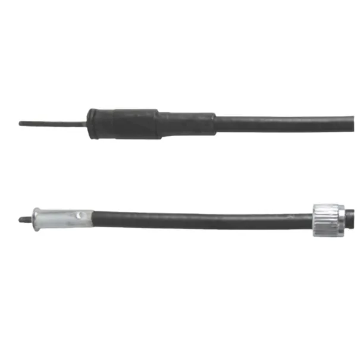
Cabo do velocímetro CG 150 Titan/Sport/Job Magnetron
R$ 14,90no Pix

Cabo de embreagem CG 150 Titan 2009 a 2010 Magnetron
R$ 15,90no Pix


Cabo do velocímetro CG 150 Titan 2009 a 2010 Magnetron
R$ 15,90no Pix

Cabo do acelerador CG 150 Fan 2010 a 2011 Magnetron
R$ 15,90no Pix

Cabo de embreagem CG 150 Titan 2011 a 2013 Magnetron
R$ 18,90no Pix
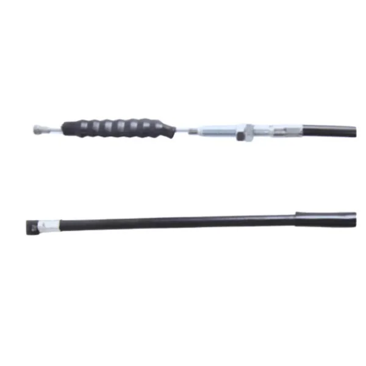
Cabo de embreagem CG 150 Fan/Titan/Job Magnetron
R$ 13,90no Pix

Cabo do velocímetro CG 150 Titan 2011 a 2013 Magnetron
R$ 17,90no Pix
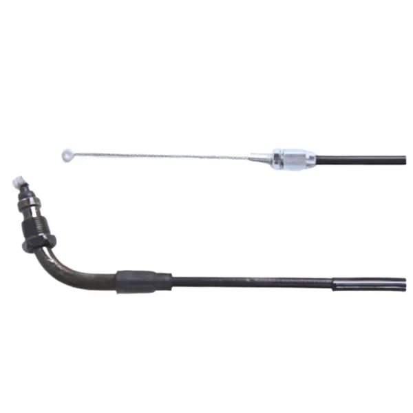
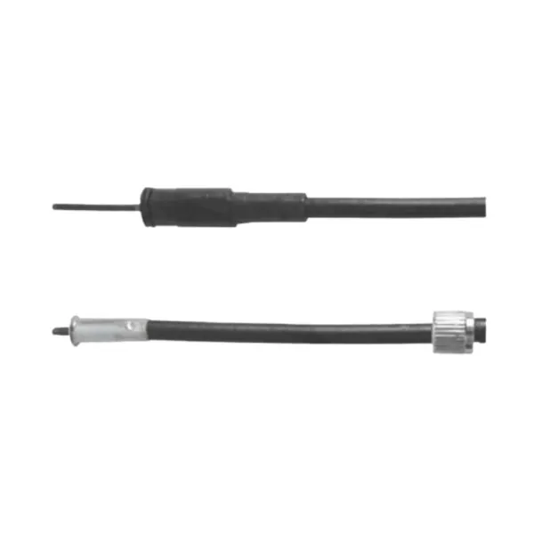
Cabo do velocímetro CG 150 Titan 2004 a 2008 Mide Parts
R$ 10,90no Pix
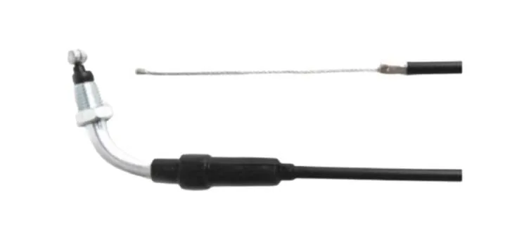

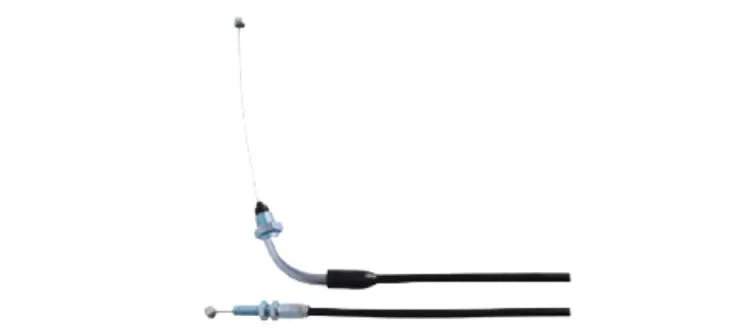

Cabo de embreagem CG 150 Fan/Titan/Job Mide Parts
R$ 11,90no Pix

Cabo motor partida CG 150 Fan/Titan e CG 125 Fan/Cargo Zouil
R$ 22,90no Pix

Cabo do acelerador CG 125 Fan/Titan/Cargo Magnetron
R$ 11,90no Pix

Cabo de embreagem CG 125 Fan/Cargo 2009 a 2010 Magnetron
R$ 12,90no Pix
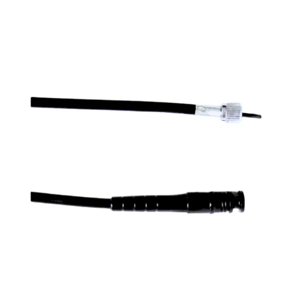
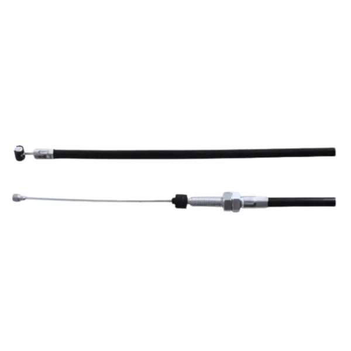
Cabo de embreagem CG 125 Fan/Titan/Cargo Magnetron
R$ 14,90no Pix

Cabo do velocímetro CG 125 Fan/Cargo 2009 a 2011 Magnetron
R$ 13,90no Pix
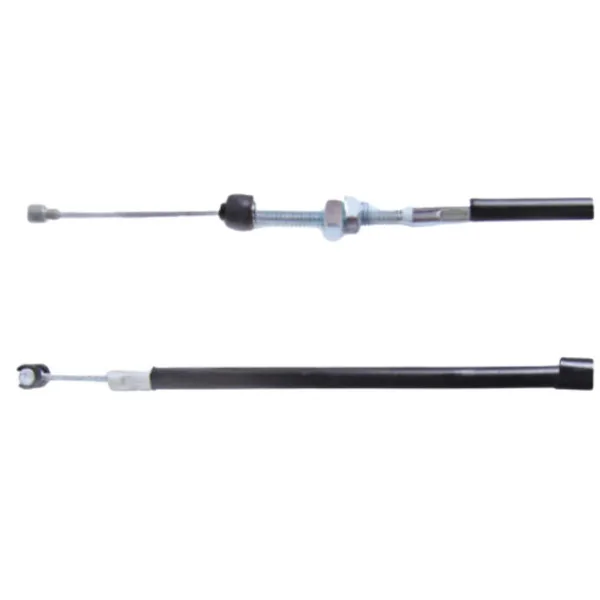
Cabo de embreagem CG 125 Fan/Cargo Magnetron
R$ 13,90no Pix

Cabo do acelerador CG 125 Fan/Cargo 2009 a 2011 Magnetron
R$ 11,90no Pix

Cabo de embreagem CG 125 Cargo 1995 a 1999 Magnetron
R$ 14,90no Pix

Cabo de embreagem CG 125 Fan/Cargo 2009 a 2010 Mide Parts
R$ 12,90no Pix


Cabo de embreagem CG 125 Fan 2014 a 2015 Mide Parts
R$ 12,90no Pix

Cabo de embreagem CG 125 Fan/Titan Mide Parts
R$ 12,90no Pix
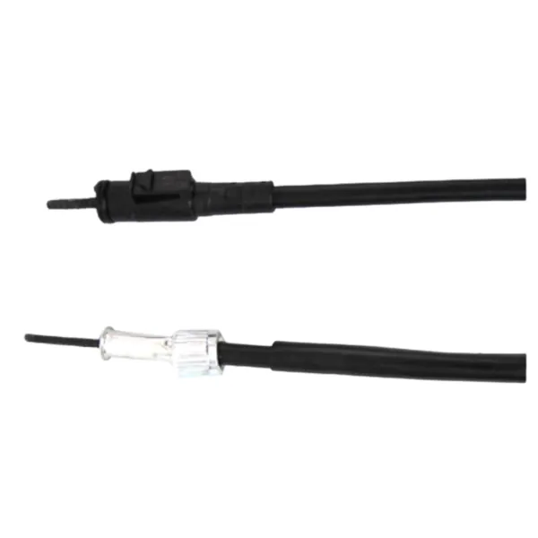
Cabo do velocímetro Biz 125, Biz 110i e outras Magnetron
R$ 14,90no Pix

Cabo do acelerador Biz 125 2009 a 2010 Magnetron
R$ 14,90no Pix
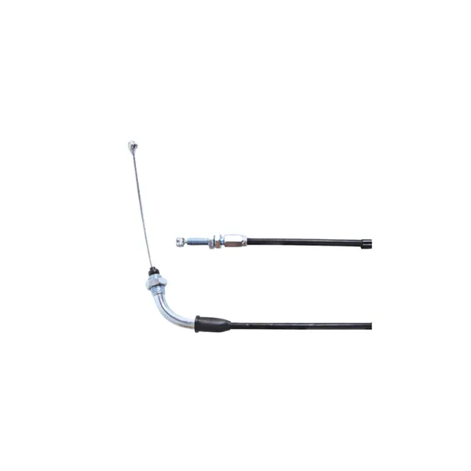
Cabo do acelerador Biz 125 2006 a 2015 Magnetron
R$ 13,90no Pix
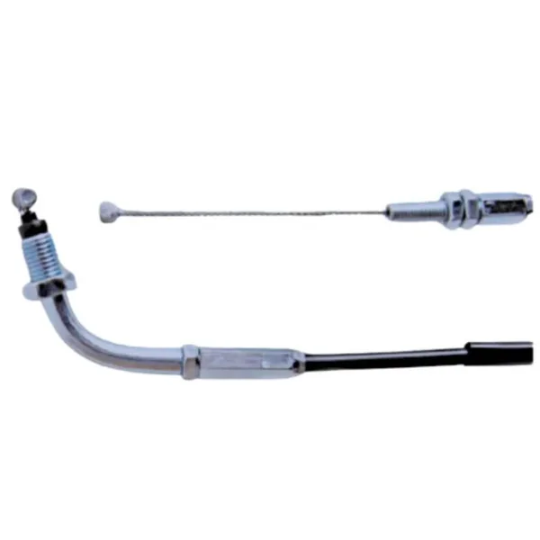
Cabo do acelerador Biz 125 e Biz 110i Mide Parts
R$ 10,90no Pix

Cabo do acelerador Biz 125 2009 a 2010 Mide Parts
R$ 9,90no Pix

Cabo do acelerador Biz 110i 2019 a 2023 Magnetron
R$ 19,90no Pix
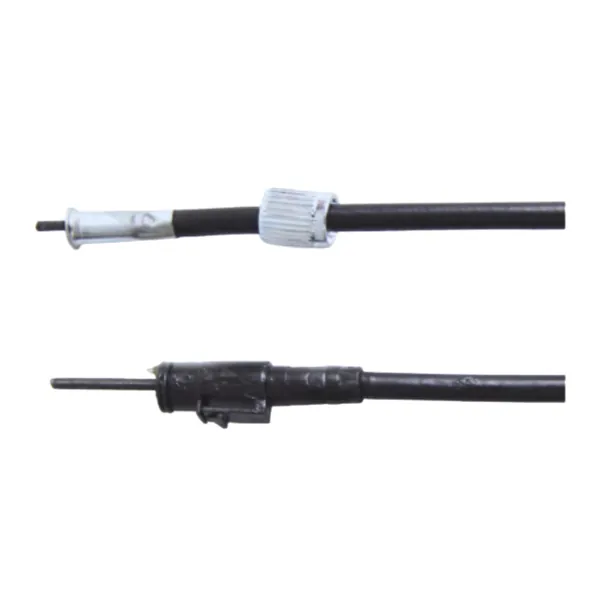
Cabo do velocímetro Pop 110i e Pop 100 Magnetron
R$ 18,90no Pix

Cabo de embreagem Pop 110i e Pop 100 Magnetron
R$ 12,90no Pix


Cabo do velocímetro Pop 100 2007 a 2012 Magnetron
R$ 13,90no Pix

Cabo de embreagem Bros 160 2015 a 2019 Magnetron
R$ 14,90no Pix

Cabo do acelerador Bros 160 Magnetron (cód. 90281350)
R$ 15,90no Pix
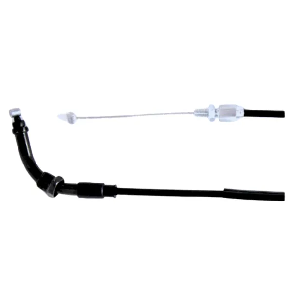
Cabo do acelerador Bros 160 Magnetron (cód. 90281360)
R$ 13,90no Pix
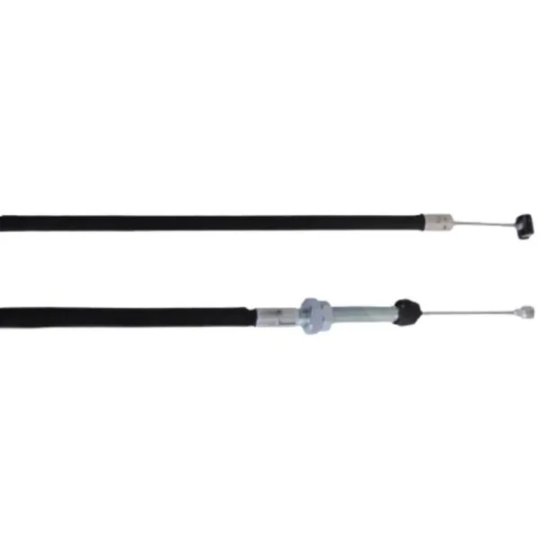
Cabo de embreagem Bros 160 2015 a 2017 Mide Parts
R$ 12,90no Pix

Cabo do velocímetro Bros 150 2006 a 2010 Magnetron
R$ 18,90no Pix

Cabo do acelerador Bros 150 2009 a 2014 Magnetron
R$ 11,90no Pix

Cabo de embreagem Bros 150 2006 a 2008 Magnetron
R$ 12,90no Pix

Cabo do acelerador Bros 150 2003 a 2008 Magnetron
R$ 10,90no Pix
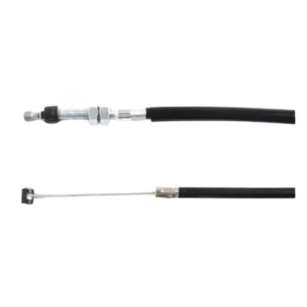
Cabo de embreagem Bros 150 2009 a 2010 Magnetron
R$ 12,90no Pix

Cabo do velocímetro Bros 150 2013 a 2014 Magnetron
R$ 14,90no Pix

Cabo de embreagem Bros 150 2006 a 2008 Mide Parts
R$ 11,90no Pix

Cabo de embreagem Bros 150 2009 a 2012 Mide Parts
R$ 12,90no Pix
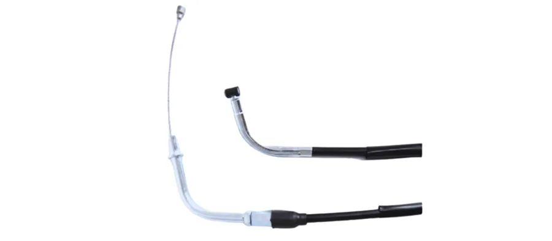
Cabo de embreagem Fazer 150 e Factor 150 Magnetron
R$ 19,90no Pix

Cabo de embreagem Fazer 150 2016 Magnetron
R$ 16,90no Pix

Cabo de embreagem Factor 125 2009 a 2015 Magnetron
R$ 20,90no Pix
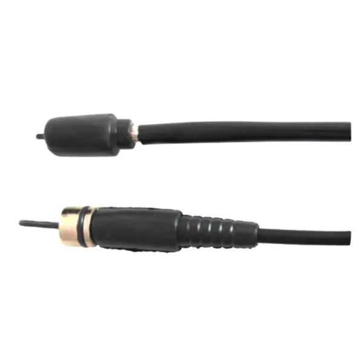
Cabo do velocímetro Factor 125 2009 a 2016 Magnetron
R$ 13,90no Pix
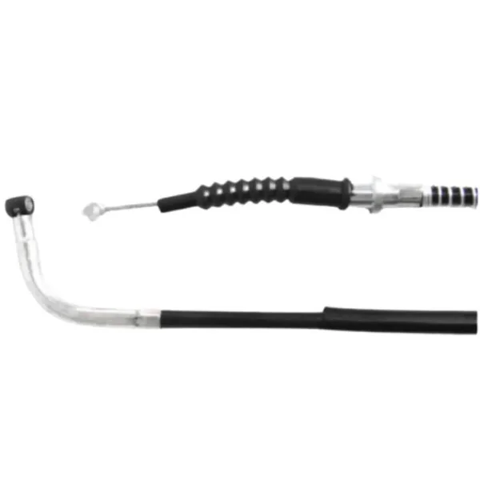
Cabo de embreagem Factor 125 2009 a 2016 Mide Parts
R$ 18,90no Pix
Não achou a peça?
Mande o modelo e o ano da moto no WhatsApp (27) 92000-6463. A gente confere na distribuidora e responde com o preço.